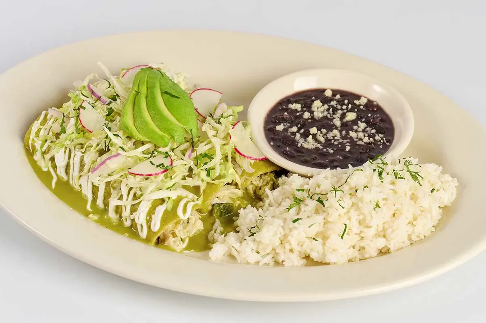
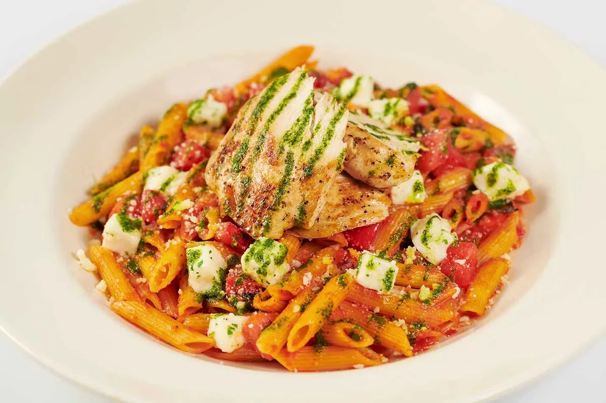
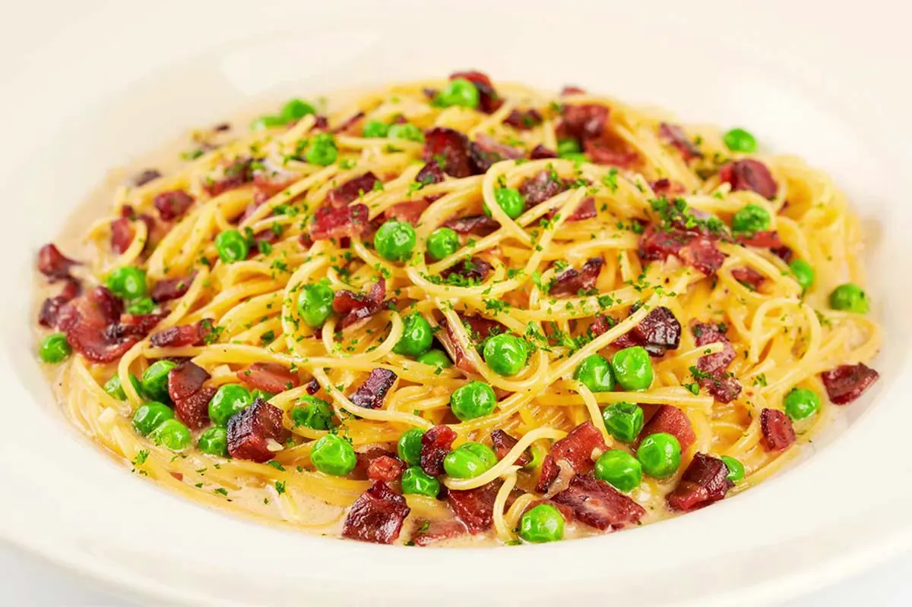
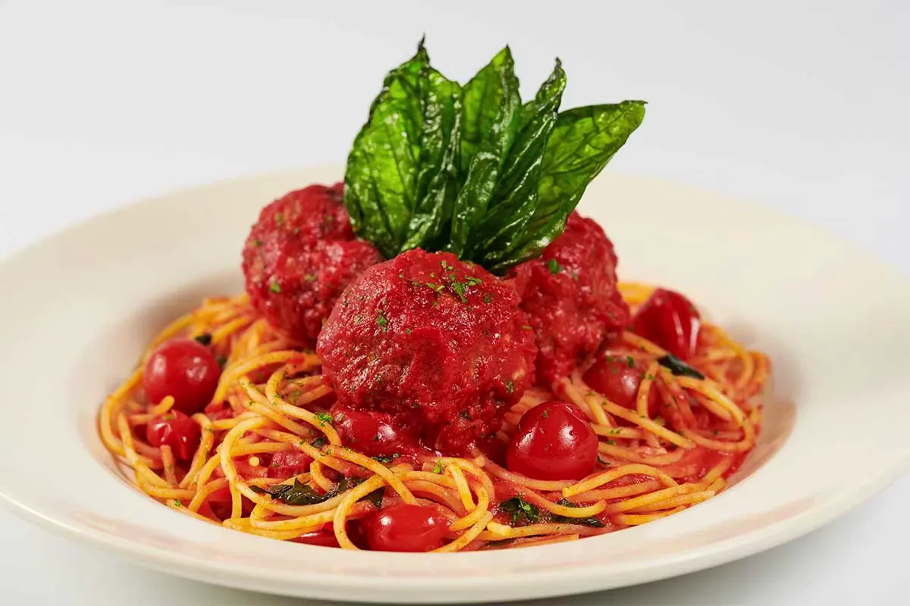

The Cheesecake Factory Pastas Menu: Prices, Calories & Which One to Order (2026)
Last updated:
Pasta is one of the Cheesecake Factory menu's most-ordered categories, and one of its richest. Portions are famously large, several dishes top 1,500 calories on a single plate, and the gap between the cheapest and most expensive way to order the same dish can run $5 to $10. Below is the full pasta lineup with 2026 prices and calories, how protein add-ons and portion size actually change what you pay and eat, and which dish to order for what you're after.
Prices vary slightly by location; calories are from the brand's published nutrition data or its own stated figures where available.
Download the Pasta Menu PDF
Every dish, price, and calorie count on this page in one free, printable PDF.
The full lineup

Chicken Madeira
Sautéed chicken breast, asparagus, mozzarella, and a Madeira wine-mushroom sauce (sweeter than a typical marinara or Alfredo) over mashed potatoes. The chain's single most-cited signature dish.

Fettuccini Alfredo with Chicken
Classic Alfredo tossed with grilled chicken.

Fettuccini Alfredo with Shrimp
Alfredo with shrimp instead of chicken. One of the two heaviest pastas on the menu.

Bistro Shrimp Pasta
Spaghettini with panko-fried shrimp, mushrooms, tomatoes, arugula, and a basil-garlic-lemon cream sauce. The highest-calorie pasta on the menu as served, and calories climb further if you add chicken, salmon, or steak.

Pasta Da Vinci
Penne with chicken, mushrooms, and onions in a light sauce. Simple on paper, but consistently the highest-rated pasta on the menu in customer reviews.

Pasta Carbonara
Classic egg, cheese, and pancetta sauce.

Louisiana Chicken Pasta
Spicy, crunchy fried chicken over bow-tie pasta in a spicy New Orleans cream sauce. A top-rated menu item and one of the highest-calorie dishes on the entire menu.

Cajun Jambalaya Pasta
Chicken, shrimp, and bell peppers in a Cajun cream-tomato sauce over linguine.

Four Cheese Pasta
Rich, cheesy, vegetarian sauce. Also the pasta reviewers say holds up best when swapped to gluten-free noodles.

Spaghetti and Meatballs
Classic spaghetti with house-made meatballs in tomato sauce.

Evelyn's Favorite Pasta
Bow-tie pasta in a light cream sauce with vegetables. A menu signature and vegetarian-friendly.

Tomato Basil Pasta
Tomato-cream sauce with fresh basil. The lowest-priced pasta on the menu and lighter than the cream-heavy dishes.
The lunch portion trick
If you visit before 4:00 PM, many of these pastas are available in a smaller lunch portion for roughly $5 to $7 less than the regular dinner size. This is the single biggest lever for both cost and calories on this menu; picking a lighter dish barely moves the needle compared to ordering the same dish in the smaller portion. It's worth asking your server which specific pastas have a lunch version at your location, since availability isn't identical everywhere.
For other ways to cut the bill beyond the lunch-portion swap, check our Happy Hour menu and times or our current promo codes and deals guide.
Protein add-ons cost extra
Several pastas, including Bistro Shrimp Pasta and Pasta Da Vinci, list a base protein but let you add chicken, salmon, shrimp, or steak on top for an additional charge. This is a real, repeated source of bill surprise: the menu price you see is for the dish as described, not with an upgraded or doubled protein. If a dish sounds light on protein for your appetite, ask for the add-on price before you order rather than assuming it's included.
Gluten-free and vegetarian notes
- Gluten-free: Gluten-free penne can be substituted into almost any pasta dish. Reviewers specifically note it holds its texture well in Four Cheese Pasta. This is a swap, not a separate gluten-free kitchen, so confirm sauce preparation with your server if cross-contact is a concern — see our gluten-free menu for more dishes built the same way
- Vegetarian-friendly: Evelyn's Favorite Pasta, Tomato Basil Pasta, and Four Cheese Pasta are the most commonly ordered meat-free options
Which pasta should you order?
- Want the dish with the best actual reviews, not just the most famous one: Pasta Da Vinci. It's simple on paper but the most consistently praised pasta on the menu, ahead of the flashier options
- Want the signature, crowd-pleasing dish: Chicken Madeira, the most-cited pasta-adjacent item on the whole menu
- Big appetite, don't mind the richest option on the menu: Bistro Shrimp Pasta, but order it knowing it's the highest-calorie pasta as served, before any add-on
- Want spice and crunch: Louisiana Chicken Pasta, planning to split it or take half home given the calorie count
- Want something lighter, still filling: Tomato Basil Pasta, also the cheapest pasta on the menu
- Ordering at lunch: ask for the lunch portion before defaulting to the dinner size. It's the fastest way to cut both cost and calories without switching dishes
Frequently asked questions
Chicken Madeira and Louisiana Chicken Pasta are the two most frequently cited dishes across reviews and delivery orders, but Pasta Da Vinci consistently rates highest in customer reviews.
Sauces are made fresh daily and pasta is cooked to order, though the dry pasta itself is sourced rather than made in-house.
Yes. Many pastas are available in a smaller lunch portion before 4:00 PM for about $5 to $7 less than the dinner size, though availability varies by dish and location.
Yes. Several dishes, including Bistro Shrimp Pasta and Pasta Da Vinci, charge an additional amount for protein upgrades or add-ons rather than including them in the base price.
Yes. Gluten-free penne is available as a substitute on most pasta dishes; confirm with your server for sauce preparation since it's a swap rather than a dedicated gluten-free kitchen.
Bistro Shrimp Pasta, at roughly 2,170 calories as served, before any protein add-on.
Final thoughts
The biggest cost and calorie differences on this menu don't come from which pasta you pick. They come from when you order it and what you add to it. Check the lunch portion option before 4 PM, confirm add-on pricing before upgrading protein, and use our nutrition guide if you're tracking calories closely.